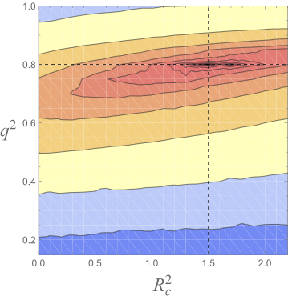

Introduction: how do we measure what we can't see?
Astrophysicists generally accept that there is a massive but invisible halo of dark matter around most galaxies. However, the nature of these halos is largely unknown. One natural place to start investigating these dark matter halos is our own Milky Way. But how do we measure something we can't see?
One way to study dark matter is to observe its gravitational effect on visible objects: stars. And we're in luck, because the spacecraft Gaia is currently observing the movement of one billion stars the Milky Way. These movements contain large amounts of statistical information about the gravitational potential they are traveling in. If we could infer this potential from the observations, the we could use the well-known Poisson's equation to calculate the mass distribution of the galaxy.
We've created a simple, numerical algorithm to extract the gravitational potential from the data. Given a set of observed positions and velocities of particles (stars), we are able to infer the potential in which they are traveling.
The fundamental assumption: phase-mixing
The algorithm we developed relies on the system being phase-mixed. To get an idea of what a phase-mixed system looks like, consider particles evolved under the potential \Phi(x) = \frac{1}{2}|x|^\alpha for \alpha = 1.5. The following video demonstrates what happens when an initially compact group of particles is evolved in time, plotted in phase space:
The phase-mixing of 200 particles.
Notice that as time progresses, the initial configuration is lost, and the particles approach a configuration that is macroscopically steady-state (although, of course, the particles are still moving microscopically). This is an important result known as Jeans's theorem.
Importantly, different potentials cause the initial configuration to approach slightly different steady-state "shapes." Take a look at the same set of particles evolved to steady-state under different potentials (in this case, different values of \alpha):
Steady-state configurations for \alpha = 1.5, \alpha = 1.8, and \alpha = 2.5.
This property, that different potentials yield different steady-state configurations, will turn out to be crucial to our method.
The insight behind the inference algorithm
Suppose that we are given particles' positions and velocities taken from an unknown potential, and our aim is to guess which potential these particles come from. We may assume that they are drawn from a phase-mixed system.
Particles observed from an unknown potential.
Our algorithm relies on the following insight: particles drawn from a steady-state distribution will remain in steady-state only if evolved under the correct potential. If we evolve the particles under an incorrect potential, the system will tend towards a different steady-state configuration.
Then an algorithm might be simply to guess a bunch of different potentials, evolve the observed particles under these trial potentials, and see which potentials best preserve the original configuration. The following figure illustrates the evolution of the particles in Figure 3 after many time steps.
The evolution of the observed particles under different potentials.
In this simple example, the particles most likely come from an \alpha = 1.5 potential, because the configuration of the particles evolved under that potential most resembles the original, observed distribution.
Mathematical derivation
Rather than simply choosing the best potential by eye, let us quantify how good a trial potential is, i.e. how close an evolved configuration is to the observed particles. Let's assign a "likelihood" score to each trial potential, with higher scores corresponding to closer configurations.
First, we define a function that encodes the distribution of our observed particles after having been evolved for a time t under a potential \Phi. We use a technique called kernel density estimation to approximate the phase-space density at time t; define a function f to be
f(x,v;t \,|\, \Phi) = \sum_i K(x_i(t) - x)\, K(v_i(t) - v),
where x_i(t) and v_i(t) denote the position and velocity of the ith particle evolved to time t under the potential \Phi, and K(\cdot) is a kernel, a function that is non-zero only around 0. For example, a typical kernel is a Gaussian centered at 0. The result is that this function f(x,v;t\,|\,\Phi) gives an approximation to the phase-space density of particles at x and v and time t.
Next, we define a time-averaged version of f:
f(x,v \,|\, \Phi) = \frac{1}{T}\int_0^T f(x,v;t\,|\,\Phi) \,dt.
This approximates the steady-state phase-space density of particles evolved under a potential \Phi.
If f is properly normalized, we can treat this density function as a probability distribution function. Then the probability of observing the positions and velocities we observed assuming a particular potential is
\Pr(x_1,v_1,\ldots,x_n,v_n\,|\,\Phi) = \prod_i f(x_i, v_i \,|\, \Phi),
assuming that the particles were drawn independently.
This allows us to assign a score to different trial potentials, based on our observed data, using Bayes' theorem:
\Pr(\Phi \,|\, x_1,v_1,\ldots,x_n,v_n) \propto \Pr(\Phi)\,\Pr(x_1,v_1,\ldots,x_n,v_n\,|\,\Phi).
The factor of \Pr(\Phi) is called the prior distribution of \Phi, which is negligible in many cases. This final function is called the posterior distribution of \Phi (or simply, the posterior), and it satisfies our original goal: it's greatest for the most probable trial potentials!
Summary of the algorithm
Our algorithm to infer general potentials from observed x_i,v_i is as follows.
Assume a form of the potential by parameterizing the potential with any number of parameters \alpha_j. This parameterization step can be quite general, as most functions can be approximated with, for example, a power series.
Guess a set of values for the parameters \alpha_j. One intelligent way to choose parameters is using the Metropolis-Hastings algorithm.
Calculate the posterior—the likelihood score—corresponding to the chosen parameters.
Repeat steps 2–3 indefinitely. We can report either the single set of parameters with the maximum likelihood, or a range of parameter values with high likelihoods.
Preliminary results
We have tested the algorithm for a simple 2D potential, the logarithmic potential. It models a simple galaxy. Its potential is
\Phi(x,y) = \log(x^2 + \frac{y^2}{q^2} + R_c^2),
where q and R_c are parameters that describe the shape of the potential (the ellipticity and core radius, respectively). Below is a video of particles traveling in a logarithmic potential.
"Stars" in a logarithmic potential.
We generated mock data from this potential and tested the inference algorithm on the resulting "observations." The results for n = 10^5 particles and true parameters of q^2=0.8 and R_c^2=1.5 are shown in the following figure.

A contour plot of the likelihood of the parameters. Red is higher; contours are at 2^{-2^i} for i=0,\ldots,13.
As you can see, the posterior distribution correctly peaks near the true values of the parameters, and thus, the algorithm is successful!
Advantages and future work
Our method has two novel advantages:
General: This algorithm requires only that the particles are in steady-state, whereas older methods require improbable assumptions, e.g. that the potential is Liouville-integrable.
Intuitive: It has an intuitive interpretation in terms of phase-mixing.
Nevertheless, there are several challenges that should be addressed before applying the algorithm to the Gaia data:
Computation time: An application to 10^9 particles, although feasible, currently requires a large supercomputer cluster.
Noise: The likelihood function is currently quite noisy, which may prevent accurate inference of parameters.
Lack of error bounds: It is currently unclear how to accurately bound the error of the estimated paramters.